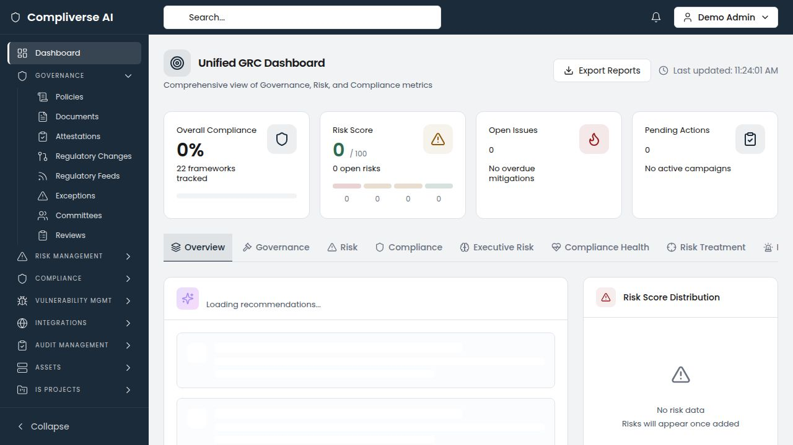
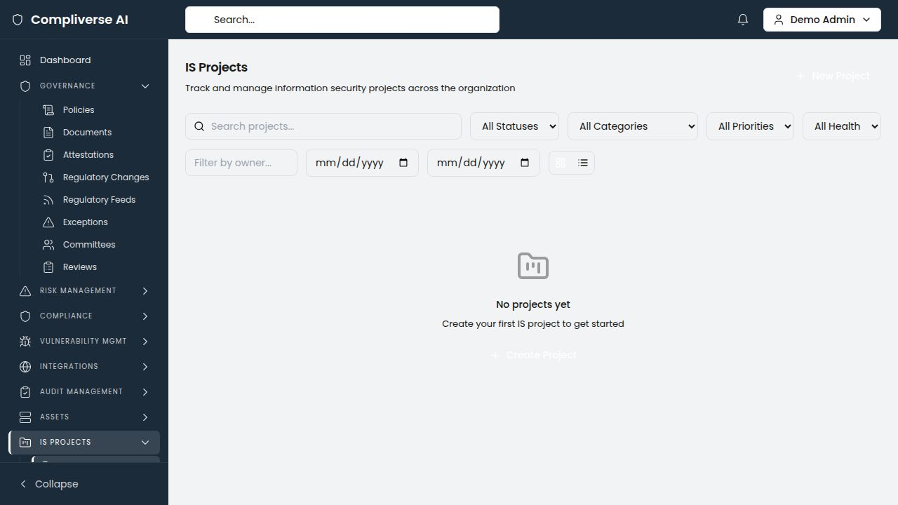

Product Brochure Technology
Technology & SaaS
The Technology GRC Challenge
Technology and SaaS companies face a distinct compliance challenge: demonstrating security maturity to customers, partners, and regulators — while operating in an environment of continuous change. As companies scale from startup to enterprise, compliance requirements compound:
- SOC 2 Type II becomes table stakes for B2B SaaS sales
- ISO 27001 is required for international enterprise customers
- GDPR and global privacy regulations follow international expansion
- PCI DSS applies when processing payment data
- SOX arrives with a public listing
- FedRAMP opens government sales channels
Each new framework historically requires months of mapping effort. Meanwhile, continuous deployment cycles mean evidence of control operation must be ongoing, not point-in-time. And enterprise customers send lengthy security questionnaires that consume engineering and compliance time.
Platform Overview
CompliVerse AI is an enterprise-grade, AI-native GRC platform that unifies audit management, compliance tracking, enterprise risk management, vulnerability management, IT asset governance, and evidence management into a single, multi-tenant platform.

Technology-Specific Capabilities
Instant Cross-Framework Mapping
Upload SOC 2 Trust Services Criteria and ISO 27001 Annex A controls. CompliVerse AI's semantic similarity engine immediately maps controls across both frameworks, showing which SOC 2 controls already satisfy ISO 27001 requirements and where gaps exist. When a new framework is added (GDPR, PCI DSS, FedRAMP), the AI instantly shows existing coverage.

Tech Impact: Adding a new framework drops from 4–6 weeks to 1–3 days. One evidence artifact satisfies multiple framework requirements simultaneously.
Continuous Evidence Collection
The unified evidence vault captures evidence as it's created — access review screenshots, change management records, incident response logs, security configurations — and maps it to relevant controls automatically. SOC 2 Type II requires evidence of continuous control operation over a review period; CompliVerse AI makes this automatic rather than retroactive.

Tech Impact: SOC 2 evidence preparation drops from 6+ weeks to under 1 week. The external auditor receives organized, pre-approved evidence by control.
Gap Analysis for New Markets
Expanding to Europe and need GDPR compliance? Pursuing FedRAMP for government sales? Upload the framework and immediately see which controls you already cover through existing SOC 2 and ISO 27001 certifications. Get a prioritized remediation roadmap, not a blank spreadsheet.

Vulnerability Management for Engineering Teams
Import vulnerability data into the native vulnerability register. Track remediation with SLA compliance and MTTR metrics. Assign to engineering teams by department. Maintain the documentation trail that SOC 2 auditors require for vulnerability management controls.

IS Project Management
Track security initiatives — SIEM deployments, encryption upgrades, penetration testing programs, security training rollouts — with milestones, budgets, team assignments, and direct linkage to the risks they mitigate. Demonstrate to auditors and customers that security investments are planned, resourced, and tracked.

IT Asset Governance for Cloud-Native Environments
Manage cloud resources (AWS, Azure, GCP), SaaS dependencies, internal applications, and third-party services. CIA triad ratings ensure that data classification aligns with access controls and encryption requirements.

Audit Management for Compliance Cycles
Plan and execute internal audits aligned with SOC 2 control testing periods. AI-powered prior-audit cross-referencing identifies recurring findings from previous audit cycles, ensuring systemic issues are escalated and resolved.

Technology Compliance Frameworks Supported
|
Framework |
Coverage |
SOC 2 Type I & Type II |
Full Trust Services Criteria with evidence mapping |
ISO 27001:2022 |
Full Annex A controls with cross-framework mapping |
GDPR |
Data protection requirements with HIPAA/ISO cross-mapping |
CCPA / CPRA |
California consumer privacy requirements |
PCI DSS v4.0 |
Payment card security controls |
SOX |
Financial reporting controls (public companies) |
FedRAMP |
Government cloud security requirements |
NIST CSF / NIST 800-53 |
Cybersecurity framework controls |
CIS Controls |
Security best practice benchmarks |
Custom Frameworks |
Upload any proprietary or customer-specific requirements |
Key Metrics for Technology
|
Metric |
Impact |
SOC 2 evidence preparation |
60–75% reduction |
New framework onboarding |
From 4–6 weeks to 1–3 days |
|
Cross-framework evidence duplication |
Eliminated |
|
Vulnerability remediation documentation |
Automated |
|
Time from zero to compliant (new framework) |
Weeks, not months |
Getting Started
- Discovery Call — Assess your current compliance landscape and certification goals
- Framework Upload — Import SOC 2, ISO 27001, and applicable frameworks
- AI Mapping — Run cross-framework analysis and identify existing coverage
- Evidence Integration — Connect evidence workflows to the unified vault
- Go-Live — Continuous compliance from day one
Typical time to first value: 1–2 weeks
Schedule Your Demo: https://compliverse.ai
Contact: Liztek@liztek.ca
CompliVerse AI — Governance. Risk. Compliance. Unified by Intelligence